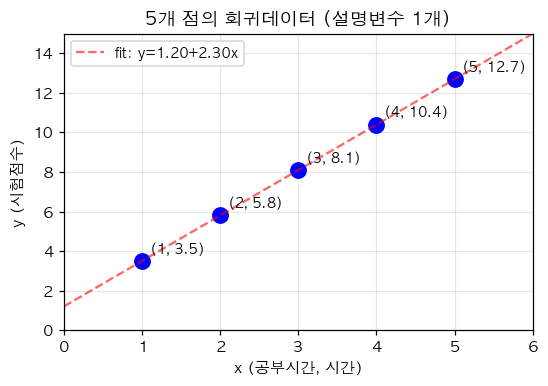
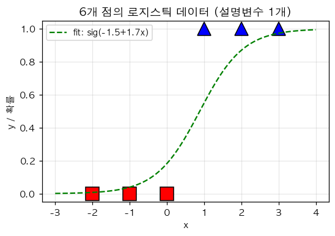
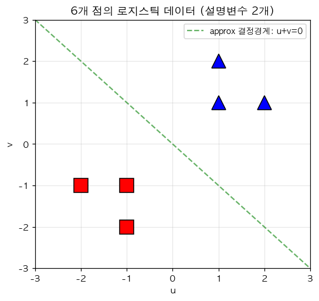
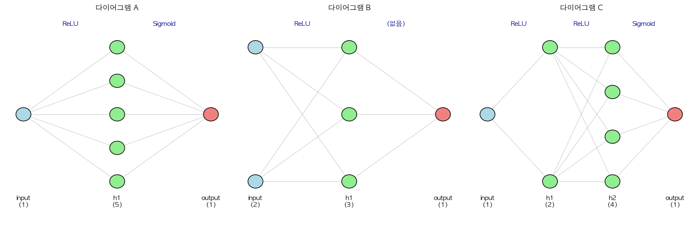

비밀 ▷ 딥러닝2026 중간고사 (v7 — Quiz 미러링, 자기완결성)
v7 — v6 의 자기완결성 (self-containment) 수정판. 강의 퀴즈 미러링 17개 큰문제, 모든 큰문제가 다른 문제 참조 없이 독립적으로 출제 가능하도록 그림·설명을 각각 포함.
1. 알고리즘 비교 풀이 토론 (Quiz7 + Quiz15-2 스타일 결합)
다음 두 알고리즘을 고려하자. (강의노트 「2차원 경사하강법 아이디어」)
- 알고리즘1: 현재 점 주변의 9개 격자점 (대각선 포함) 중 가장 작은 함수값을 갖는 점으로 이동
- 알고리즘2: \(x\) 와 \(y\) 축 방향의 5개 점만 함수값을 비교하여 각 축의 이동방향을 결정
강의노트의 표에 따르면 차원 \(d\) 에서 두 알고리즘이 조사하는 격자점 수는 다음과 같다.
| \(d\) | 알고리즘1 | 알고리즘2 |
|---|---|---|
| 2 | 9 | 5 |
| 3 | 27 | 7 |
| 10 | 59049 | 21 |
연구원이 두 알고리즘을 두 가지 시나리오에서 한 step 씩 적용해 본 결과:
시나리오 A (시작점 \((0, 0)\), 격자 간격 \(0.1\)):
| \(y \backslash x\) | \(-0.1\) | \(0\) | \(0.1\) |
|---|---|---|---|
| \(0.1\) | \(-50\) | \(0\) | \(0\) |
| \(0\) | \(0\) | \(0\) | \(0\) |
| \(-0.1\) | \(0\) | \(0\) | \(0\) |
→ 알고리즘1 은 가장 작은 값 \(-50\) 의 셀 \((-0.1, 0.1)\) 로 이동. 알고리즘2 는 \(x\) 축 / \(y\) 축 모두 함수값이 동일 (모두 \(0\)) 하여 \((0, 0)\) 에 머무름.
시나리오 B (시작점 \((0.1, -0.1)\), 함수 \(f(x, y) = 10(x+y)^2 + (x-y)^2\), 격자 간격 \(0.1\)):
| \(y \backslash x\) | \(0.0\) | \(0.1\) | \(0.2\) |
|---|---|---|---|
| \(0.0\) | \(0.00\) | \(0.11\) | \(0.44\) |
| \(-0.1\) | \(0.11\) | \(0.04\) | \(0.19\) |
| \(-0.2\) | \(0.44\) | \(0.19\) | \(0.16\) |
→ 알고리즘1 은 가장 작은 값 \(0.00\) 의 셀 \((0.0, 0.0)\) 로 이동. 알고리즘2 는 현재 점 \((0.1, -0.1)\) 의 양 축 방향 모두에서 현재값 \(0.04\) 가 최소 — \((0.1, -0.1)\) 에 머무름.
위 함수 \(f(x, y) = 10(x+y)^2 + (x-y)^2\) 는 아래로 볼록 (convex) 한 함수임을 강의노트의 plot_surface_3d 로 확인할 수 있다.
이 결과를 두고 다음 5명의 학생이 토론하였다.
- 재현: “두 알고리즘은 항상 같은 결과를 줘. 시나리오 A 의 표가 잘못된 게 분명해.”
- 슬기: “재현이 틀렸어. 시나리오 A, B 모두에서 알고리즘1 과 알고리즘2 가 한 step 의 결과로 다른 셀을 골라. 두 알고리즘은 다른 결과를 줄 수 있어.”
- 희석: “알고리즘1 은 9개 격자점을 모두 보니까 5개만 보는 알고리즘2 보다 항상 더 우수해. 알고리즘2 는 쓸 필요가 없어.”
- 은희: “차원이 커지면 알고리즘1 의 계산량이 \(3^d\) 로 폭발해. 강의노트 표에서 \(d = 10\) 이면 알고리즘1 은 59049 점, 알고리즘2 는 21 점만 봐. 그래서 실용적으로는 알고리즘2 가 사용돼.”
- 세민: “시나리오 B 의 함수는 convex 인데도 두 알고리즘이 다른 결과를 줘. 즉 convex 라고 해서 두 알고리즘이 항상 같은 결과를 주지는 않아.”
(1) 위 5명의 학생 중 옳은 주장 을 한 학생을 모두 고르시오.
① 재현, 희석
② 슬기, 은희, 세민
③ 재현, 슬기, 희석
④ 모두 옳음
(2) 「재현」 의 주장 (“두 알고리즘은 항상 같은 결과”) 이 틀렸다는 가장 직접적인 근거는?
① 시나리오 A 에서 알고리즘1 은 \((-0.1, 0.1)\), 알고리즘2 는 \((0, 0)\) — 두 알고리즘의 결과가 명백히 다름
② 두 알고리즘은 모두 발산
③ 알고리즘1 은 학습 알고리즘이 아님
④ 시나리오 A 의 함수는 정의가 잘못됨
(3) 「희석」 의 주장 (“알고리즘1 이 항상 우수, 알고리즘2 는 쓸 필요 없음”) 이 틀린 이유는?
① 알고리즘1 의 격자점 수는 차원 \(d\) 가 커지면 \(3^d\) 로 매우 빠르게 증가하여 고차원에서는 사실상 사용 불가능 — 실용적으로는 알고리즘2 가 사용됨
② 알고리즘1 은 항상 발산
③ 알고리즘1 은 convex 함수에서만 작동
④ 알고리즘1 의 9개 점은 항상 더 큰 함수값을 가짐
(4) 강의노트의 표에서 차원 \(d = 5\) 일 때 알고리즘1, 알고리즘2 의 격자점 수는?
① 알고리즘1: \(3^5 = 243\), 알고리즘2: \(2 \cdot 5 + 1 = 11\)
② 알고리즘1: \(11\), 알고리즘2: \(243\)
③ 둘 다 같음
④ 알고리즘1: \(5^3 = 125\), 알고리즘2: \(5\)
(5) 「세민」 의 주장 (“convex 함수에서도 두 알고리즘이 다른 결과”) 의 의미로 가장 적절한 것은?
① 시나리오 B 의 함수는 convex 인데도 알고리즘1 과 알고리즘2 가 한 step 에서 서로 다른 셀로 이동함을 보여줌. 즉 함수가 convex 라는 사실만으로는 두 알고리즘이 같은 결과를 준다고 단정할 수 없음
② Convex 함수에서는 두 알고리즘이 항상 발산
③ Convex 함수에서는 두 알고리즘이 항상 같은 결과
④ Convex 함수는 정의되지 않음
(6) 위 토론에서 알고리즘2 가 강의노트에서 채택된 가장 큰 이유는?
① 알고리즘1 은 차원이 높아지면 격자점 수가 \(3^d\) 로 폭발하여 계산 비용이 너무 크기 때문 — 알고리즘2 는 \(2d + 1\) 만 보므로 실용적
② 알고리즘2 가 항상 더 정확
③ 알고리즘1 은 학습 알고리즘이 아님
④ 알고리즘1 은 convex 함수에서만 작동
2. 똑같은 코드 찾기 — 단순회귀 6가지 변형 (Quiz8-3 미러링)
다음은 단순회귀 (참 모형 \(y_i = 1 + 4 x_i + \epsilon_i\), \(n = 100\)) 의 기준 코드 (풀이2) 이다.
# 데이터 (n=100)
torch.manual_seed(0)
x = torch.randn(100)
y = 1 + 4 * x + torch.randn(100) * 0.3
Y = y.reshape(-1, 1)
X = torch.stack([torch.ones(100), x], axis=1)
# 기준 코드 (풀이2)
w0hat = torch.tensor(0.0, requires_grad=True)
w1hat = torch.tensor(0.0, requires_grad=True)
for epoch in range(30):
yhat = w0hat + w1hat * x
loss = torch.sum((y - yhat)**2)
loss.backward()
w0hat.data = w0hat.data - 0.001 * w0hat.grad
w1hat.data = w1hat.data - 0.001 * w1hat.grad
w0hat.grad = None
w1hat.grad = None다음 6가지 변형의 빈칸을 채워라. 모두 기준 코드와 같은 결과를 출력해야 한다.
(1) matrix 버전:
What = ⓐ
for epoch in range(30):
Yhat = ⓑ
loss = torch.sum((Y - Yhat)**2)
loss.backward()
What.data = What.data - 0.001 * What.grad
What.grad = Noneⓐ, ⓑ 로 옳은 것은?
① ⓐ torch.tensor([[0.0], [0.0]], requires_grad=True), ⓑ X @ What
② ⓐ torch.tensor([[0.0], [0.0]]), ⓑ What @ X
③ ⓐ torch.tensor([[0.0], [0.0]], requires_grad=True), ⓑ X * What
④ ⓐ torch.tensor([[0.0]], requires_grad=True), ⓑ X @ What
(2) SSE → MSE 로 바꾸기 (학습률 보정 포함):
What = torch.tensor([[0.0], [0.0]], requires_grad=True)
for epoch in range(30):
Yhat = X @ What
loss = torch.mean((Y - Yhat)**2)
loss.backward()
What.data = What.data - ⓐ * What.grad
What.grad = Noneⓐ 로 옳은 것은? (\(n = 100\))
① 0.001
② 0.01
③ 0.1
④ 1.0
(3) loss_fn 사용:
What = torch.tensor([[0.0], [0.0]], requires_grad=True)
loss_fn = ⓐ
for epoch in range(30):
Yhat = X @ What
loss = loss_fn(Yhat, Y)
loss.backward()
What.data = What.data - ⓑ * What.grad
What.grad = Noneⓐ, ⓑ 로 옳은 것은?
① ⓐ torch.nn.MSELoss(), ⓑ 0.1
② ⓐ torch.nn.MSELoss(), ⓑ 0.001
③ ⓐ torch.nn.SSELoss(), ⓑ 0.001
④ ⓐ torch.nn.BCELoss(), ⓑ 0.1
(4) nn.Linear 사용:
net = ⓐ
ⓑ = ⓒ # 가중치 초기값 모두 0
loss_fn = torch.nn.MSELoss()
for epoch in range(30):
Yhat = net(X)
loss = loss_fn(Yhat, Y)
loss.backward()
net.weight.data = net.weight.data - 0.1 * net.weight.grad
net.weight.grad = Noneⓐ, ⓑ, ⓒ 로 옳은 것은?
① ⓐ torch.nn.Linear(2, 1, bias=False), ⓑ net.weight.data, ⓒ torch.tensor([[0.0, 0.0]])
② ⓐ torch.nn.Linear(2, 1, bias=True), ⓑ net.bias.data, ⓒ torch.tensor([0.0])
③ ⓐ torch.nn.Linear(1, 1, bias=False), ⓑ net.weight.data, ⓒ torch.tensor([[0.0]])
④ ⓐ torch.nn.Linear(1, 2, bias=False), ⓑ net.weight.data, ⓒ torch.tensor([[0.0]])
(5) optimizer 사용:
net = torch.nn.Linear(2, 1, bias=False)
net.weight.data = torch.tensor([[0.0, 0.0]])
loss_fn = torch.nn.MSELoss()
optimizer = ⓐ
for epoch in range(30):
Yhat = net(X)
loss = loss_fn(Yhat, Y)
loss.backward()
ⓑ
ⓒⓐ, ⓑ, ⓒ 로 옳은 것은?
① ⓐ torch.optim.SGD(net.parameters(), lr=0.1), ⓑ optimizer.step(), ⓒ optimizer.zero_grad()
② ⓐ torch.optim.Adam(net.parameters(), lr=0.001), ⓑ optimizer.step(), ⓒ optimizer.zero_grad()
③ ⓐ torch.optim.SGD(net.parameters(), lr=0.001), ⓑ optimizer.step(), ⓒ 빈칸 비움
④ ⓐ torch.optim.SGD(0.1), ⓑ optimizer.step(), ⓒ loss.zero_grad()
(6) bias=True + 디자인 행렬에서 1열 제거:
X1 = x.reshape(-1, 1)
net = ⓐ
net.weight.data = ⓑ
net.bias.data = ⓒ
loss_fn = torch.nn.MSELoss()
optimizer = torch.optim.SGD(net.parameters(), lr=0.1)
for epoch in range(30):
Yhat = ⓓ
loss = loss_fn(Yhat, Y)
loss.backward()
optimizer.step()
optimizer.zero_grad()ⓐ, ⓑ, ⓒ, ⓓ 로 옳은 것은?
① ⓐ torch.nn.Linear(1, 1, bias=True), ⓑ torch.tensor([[0.0]]), ⓒ torch.tensor([0.0]), ⓓ net(X1)
② ⓐ torch.nn.Linear(2, 1, bias=False), ⓑ torch.tensor([[0.0, 0.0]]), ⓒ torch.tensor([0.0]), ⓓ net(X)
③ ⓐ torch.nn.Linear(1, 1, bias=False), ⓑ torch.tensor([[0.0]]), ⓒ 없음, ⓓ net(X1)
④ ⓐ torch.nn.Linear(2, 2, bias=True), ⓑ torch.tensor([[0.0, 0.0]]), ⓒ torch.tensor([0.0, 0.0]), ⓓ net(X)
3. \(W^*\) 를 추정하는 두 가지 방법 (Quiz8-4 미러링)
회귀모형 \(y_i = w_0^\ast + w_1^\ast x_i + \epsilon_i\) 에서 \(w_0^\ast, w_1^\ast\) 를 추정하는 두 방법을 비교한다 — (가) 회귀분석의 해석해 (closed-form: \(\hat{\bf w} = ({\bf X}^\top {\bf X})^{-1} {\bf X}^\top {\bf y}\)) (나) 경사하강법.
(1) 다음 설명 중 옳은 것을 모두 고르시오.
① 적절한 학습률과 충분한 epoch 이 주어지면, 경사하강법으로 구한 추정값은 회귀분석에서 배운 해석해 (closed-form solution) 로 수렴한다
② 적절한 학습률과 충분한 epoch 이 주어지면, 경사하강법으로 구한 추정값은 결국 true parameter \([w_0^\ast, w_1^\ast]\) 로 정확히 수렴한다
③ 경사하강법에서 loss 를 SSE 에서 MSE 로 바꿀 때, 학습률을 샘플 수 \(n\) 배 만큼 조절하면 정확히 같은 결과를 얻을 수 있다
④ 경사하강법을 사용하면 벡터미분 공식을 직접 유도하지 않아도 파라미터를 추정할 수 있다
(2) 회귀의 해석해와 경사하강법의 결과 비교에 대한 설명 중 틀린 것은?
① 회귀의 해석해는 한 번의 행렬 연산으로 정확한 답을 줌 — 단, \({\bf X}^\top {\bf X}\) 가 invertible 이어야 함
② 경사하강법은 반복 알고리즘으로, 적절한 학습률과 충분한 epoch 이 있어야 해석해에 수렴
③ 경사하강법은 \({\bf X}^\top {\bf X}\) 의 invertibility 와 무관하게 항상 동작
④ 경사하강법은 회귀에서는 거의 사용하지 않음 — 항상 해석해가 더 정확하기 때문
(3) 단순회귀에서 경사하강법으로 구한 \(\hat{\bf w}\) 가 true parameter \([w_0^\ast, w_1^\ast]\) 에 점점 가까워지게 하는 방법으로 가장 효과적인 것은?
① 학습률을 0으로 만든다
② epoch 을 0으로 만든다
③ 데이터 수 \(n\) 을 늘린다 — 표본 크기가 커지면 추정값의 분산이 줄어 true 에 가까워짐
④ 손실함수를 항상 0으로 만든다
(4) SSE 손실 \(\sum (y_i - \hat y_i)^2\) 와 MSE 손실 \(\frac{1}{n} \sum (y_i - \hat y_i)^2\) 의 그래디언트 비교로 옳은 것은?
① \(\nabla_{\bf w} \text{MSE} = \frac{1}{n} \nabla_{\bf w} \text{SSE}\) — MSE 의 그래디언트는 SSE 의 \(1/n\) 배. 따라서 동일한 결과를 위해 MSE 의 학습률은 SSE 의 \(n\) 배
② 두 그래디언트는 같음
③ MSE 의 그래디언트는 SSE 의 \(n\) 배
④ 두 그래디언트는 무관
4. 베르누이 MLE 풀이 토론 (Quiz9 + Quiz15-2 스타일 결합)
아래는 \(X_i \overset{i.i.d.}{\sim} \text{Ber}(0.3)\) 을 생성한 뒤 \(p\) 를 추정하는 코드이다. 손실함수와 학습 코드는 다음과 같다.
\[l(p) = -\frac{1}{n} \sum_{i=1}^{n} \log f(x_i), \quad f(x_i) = p^{x_i}(1-p)^{1-x_i}\]
torch.manual_seed(43052)
x = torch.bernoulli(torch.tensor([0.3] * 5000))
def l(p):
return -torch.mean(torch.log(p**x * (1-p)**(1-x)))
p = torch.tensor(0.5, requires_grad=True)
for _ in range(50):
l(p).backward()
p.data = p.data - 0.1 * p.grad
p.grad = None
print(p.data) # 수렴값 출력 — 약 0.297
print(x.mean()) # 표본평균 출력 — 약 0.297 (위와 동일)이 적합 결과를 두고 다음 5명의 학생이 토론하였다.
- 재현: “\(p\) 가 0.297 로 수렴한 것은 데이터를 만든 진짜 \(p\) 값이 0.297 이라는 의미야. 우리가 진짜 값을 알아낸 거지.”
- 슬기: “재현이 틀렸어. 수렴값은 진짜 값이 아니라 표본평균
x.mean()과 같은 값이야. 코드에서 두 print 의 출력이 똑같은 것이 그 증거.” - 희석: “이 손실함수는 03~04주차에서 본 회귀의 경사하강법과 같은 형태야. \(l(p)\) 정의 →
backward()→p.data업데이트 →p.grad = None의 순서가 똑같아.” - 은희: “코드에서
p.grad = None줄을 빼도 결과는 똑같아. 어차피p.data만 업데이트하는데 grad 가 누적되는 건 결과에 영향이 없어.” - 세민: “이 손실함수 \(l(p)\) 의 모양은 convex (아래로 볼록) 이므로, 초기값을 \(p = 0.5\) 가 아니라 \(p = 0.1\) 로 바꿔도 같은 곳으로 수렴할 거야.”
(1) 위 5명의 학생 중 옳은 주장 을 한 학생을 모두 고르시오.
① 재현, 은희
② 슬기, 희석, 세민
③ 슬기, 세민
④ 재현, 희석, 은희
(2) 「재현」 의 주장 (“수렴값 0.297 = 진짜 \(p\)”) 이 틀렸다는 가장 직접적인 근거는?
① 코드에서 print(p.data) 와 print(x.mean()) 의 출력이 같음 — 즉 GD 의 수렴값은 표본평균과 일치하지, 진짜 모수와 일치한다고 보장되는 것은 아님
② 베르누이 분포는 정의되지 않음
③ 경사하강법은 절대 수렴하지 않음
④ 0.297 은 0.5 에서 시작했기 때문
(3) 「은희」 의 주장 (“p.grad = None 줄을 빼도 결과 같음”) 이 틀린 이유는?
① p.grad = None 을 빼면 매 epoch 마다 그래디언트가 누적되어 업데이트 폭이 점점 커짐 → 학습이 발산하거나 비정상적인 값으로 끝남 (Quiz8 「코드 오류 찾기」 참조)
② 결과는 정확히 같음
③ p.data 가 자동으로 0이 됨
④ 학습률이 자동으로 변경됨
(4) 「세민」 의 주장 (“\(l(p)\) 가 convex 이므로 초기값 무관 — 같은 곳으로 수렴”) 의 근거로 가장 적절한 것은?
① \(l(p)\) 가 convex (아래로 볼록) 함수이면 적절한 학습률에서는 시작점에 무관하게 같은 최소값으로 수렴 — 강의노트의 회귀손실 (MSE) 도 convex 라서 어떤 초기값이든 동일한 결과로 수렴
② Convex 함수는 항상 발산
③ 시작점이 달라지면 항상 다른 곳으로 수렴
④ Convex 와 수렴은 무관
(5) 「슬기」 의 주장 (“수렴값 = x.mean()”) 이 옳다는 것은 코드의 어느 부분에서 직접 확인할 수 있는가?
① print(p.data) 와 print(x.mean()) 두 줄의 출력이 같다는 사실 (둘 다 약 0.297)
② torch.bernoulli(torch.tensor([0.3]*5000)) 의 0.3
③ p = torch.tensor(0.5) 의 초기값 0.5
④ range(50) 의 50
(6) 「희석」 의 주장 (이 코드 패턴이 회귀의 경사하강법과 동일) 을 옳게 정리한 것은?
① loss 정의 → loss.backward() → 가중치 업데이트 → grad = None (또는 optimizer.zero_grad()) 의 4단계 패턴은 회귀, 로지스틱, 베르누이 MLE 등 모든 경사하강법 학습 코드에 공통
② 베르누이 MLE 는 회귀와 완전히 다른 코드 패턴
③ 베르누이 MLE 는 optimizer.step() 만 사용
④ 회귀에는 loss.backward() 가 없음
5. 로지스틱 모델링 — 두 방식 비교 + MSE 함정 (Quiz10-4 미러링)
(1) 어느 데이터 「광고비 vs 구매여부」 를 시뮬레이션하는 두 방식을 비교한다.
방식1:
_y = (1.5 * x + torch.randn(2000) * 0.3 > 0).float()방식2:
u = -2 + 6 * x
v = sig(u)
_y = torch.bernoulli(v)「방식2」 를 선호하는 이유로 가장 적절한 것은?
① 방식1 은 잘못된 모형이므로 사용 불가
② 방식2 는 시그모이드 + BCE 조합으로 학습이 잘 되며, 오즈 (odds) \(\log\frac{\pi^*}{1-\pi^*} = w_0^* + w_1^* x\) 의 의미해석이 자연스러움
③ 방식2 가 코드가 짧기 때문
④ 방식2 가 결과값이 더 큼
(2) 다음 코드는 로지스틱 모델 학습 코드이다. 이 코드의 가장 큰 문제점은?
for epoch in range(100):
prob = sig(linr(X))
loss = torch.mean((prob - Y)**2)
loss.backward()
linr.weight.data = linr.weight.data - 0.25 * linr.weight.grad
linr.bias.data = linr.bias.data - 0.25 * linr.bias.grad
linr.weight.grad = None
linr.bias.grad = None① MSELoss 를 손실함수로 사용 — 시그모이드 + MSE 조합은 손실면이 non-convex 이고 gradient vanishing 이 있어 학습이 느리거나 수렴 실패. BCE 사용 권장
② requires_grad 가 빠짐
③ zero_grad 가 누락
④ 학습률이 너무 큼
(3) 위 (2) 의 코드에서 MSELoss 를 BCELoss 로 바꾸기 위한 수정으로 옳은 것은?
loss = ???① torch.mean((prob - Y)**2)
② -torch.mean(Y * torch.log(prob) + (1 - Y) * torch.log(1 - prob))
③ torch.sum(Y - prob)
④ torch.mean(prob)
(4) 시그모이드 + MSE vs 시그모이드 + BCE 의 손실면 모양 비교로 옳은 것은?
① MSE: convex, BCE: non-convex
② MSE: 일반적으로 non-convex (특히 시그모이드 포화 영역에서 평탄), BCE: convex (단순 로지스틱에서)
③ 둘 다 convex
④ 둘 다 non-convex
(5) 「최악의 초기값」 (예: linr.bias = -10) 에서 시작했을 때 두 손실의 학습 양상으로 가장 적절한 것은?
① BCE 는 그래디언트가 \(\hat y - y\) 로 깔끔하여 학습이 잘 진행됨. MSE 는 시그모이드 도함수 \(\sigma'(z)\) 가 곱해져 포화 영역에서 학습 정체
② MSE 가 더 빨리 수렴
③ 둘 다 수렴 불가
④ 둘 다 같은 속도로 수렴
6. 로지스틱 — 똑같은 코드 찾기 (Quiz10-5 미러링)
기준 코드 (광고비 → 구매여부 데이터, 단순 로지스틱):
torch.manual_seed(0)
x = torch.linspace(0, 1, 1000)
piast = torch.exp(-2 + 6*x) / (torch.exp(-2 + 6*x) + 1)
y = torch.bernoulli(piast)
X = x.reshape(-1, 1)
Y = y.reshape(-1, 1)
# 기준 코드
linr = torch.nn.Linear(1, 1)
linr.weight.data = torch.tensor([[0.0]])
linr.bias.data = torch.tensor([0.0])
def sig(x):
return torch.exp(x) / (torch.exp(x) + 1)
for epoch in range(5000):
Yhat = sig(linr(X))
loss = -torch.mean(Y*torch.log(Yhat) + (1-Y)*torch.log(1-Yhat))
loss.backward()
linr.weight.data = linr.weight.data - 0.1 * linr.weight.grad
linr.bias.data = linr.bias.data - 0.1 * linr.bias.grad
linr.weight.grad = None
linr.bias.grad = None(1) 직접 정의한 sig 함수를 torch.nn.Sigmoid() 로 교체. 빈칸으로 옳은 것은?
linr = torch.nn.Linear(1, 1)
linr.weight.data = torch.tensor([[0.0]])
linr.bias.data = torch.tensor([0.0])
sig = ???
for epoch in range(5000):
Yhat = sig(linr(X))
...① torch.nn.Sigmoid()
② torch.nn.ReLU()
③ torch.nn.Sigmoid
④ torch.sigmoid
(2) BCE 손실 수식을 loss_fn 으로 교체. 빈칸 ⓐ, ⓑ 로 옳은 것은?
sig = torch.nn.Sigmoid()
loss_fn = ⓐ
for epoch in range(5000):
Yhat = sig(linr(X))
loss = ⓑ
loss.backward()
...① ⓐ torch.nn.BCELoss(), ⓑ loss_fn(Yhat, Y)
② ⓐ torch.nn.MSELoss(), ⓑ loss_fn(Yhat, Y)
③ ⓐ torch.nn.BCELoss(), ⓑ loss_fn(Y, Yhat)
④ ⓐ torch.nn.CrossEntropyLoss(), ⓑ loss_fn(Yhat, Y)
(3) optimizer 도입으로 수동 업데이트 + grad 초기화 대체. 빈칸 ⓐ, ⓑ, ⓒ 로 옳은 것은?
sig = torch.nn.Sigmoid()
loss_fn = torch.nn.BCELoss()
optimizer = ⓐ
for epoch in range(5000):
Yhat = sig(linr(X))
loss = loss_fn(Yhat, Y)
loss.backward()
ⓑ
ⓒ① ⓐ torch.optim.SGD(linr.parameters(), lr=0.1), ⓑ optimizer.step(), ⓒ optimizer.zero_grad()
② ⓐ torch.optim.Adam(linr.parameters()), ⓑ optimizer.step(), ⓒ optimizer.zero_grad()
③ ⓐ torch.optim.SGD(linr.parameters(), lr=0.001), ⓑ optimizer.step(), ⓒ 빈칸 비움
④ ⓐ torch.optim.SGD(0.1), ⓑ loss.step(), ⓒ loss.zero_grad()
(4) sig(linr(X)) 를 net(X) 로 바꾸기 위해 Sequential 사용. 빈칸 ⓐ, ⓑ, ⓒ 로 옳은 것은?
net = torch.nn.Sequential(
ⓐ,
ⓑ
)
ⓒ = torch.tensor([[0.0]])
net[0].bias.data = torch.tensor([0.0])
loss_fn = torch.nn.BCELoss()
optimizer = torch.optim.SGD(net.parameters(), lr=0.1)
for epoch in range(5000):
Yhat = net(X)
loss = loss_fn(Yhat, Y)
loss.backward()
optimizer.step()
optimizer.zero_grad()① ⓐ torch.nn.Linear(1, 1), ⓑ torch.nn.Sigmoid(), ⓒ net[0].weight.data
② ⓐ torch.nn.Sigmoid(), ⓑ torch.nn.Linear(1, 1), ⓒ net[1].weight.data
③ ⓐ torch.nn.Linear(1, 1), ⓑ torch.nn.ReLU(), ⓒ net[0].weight.data
④ ⓐ torch.nn.Linear(2, 1), ⓑ torch.nn.Sigmoid(), ⓒ net[0].weight.data
(5) linr 과 sig 를 따로 선언한 뒤 Sequential 로 묶기. 빈칸 ⓐ 로 옳은 것은?
linr = torch.nn.Linear(1, 1)
sig = torch.nn.Sigmoid()
net = ⓐ
linr.weight.data = torch.tensor([[0.0]])
linr.bias.data = torch.tensor([0.0])
loss_fn = torch.nn.BCELoss()
optimizer = torch.optim.SGD(net.parameters(), lr=0.1)
for epoch in range(5000):
Yhat = net(X)
loss = loss_fn(Yhat, Y)
loss.backward()
optimizer.step()
optimizer.zero_grad()① torch.nn.Sequential(linr, sig)
② torch.nn.Sequential([linr, sig])
③ torch.nn.Sequential(sig, linr)
④ linr + sig
7. 토이 회귀 — 설명변수 1개 (Quiz11-1 미러링)
다음 토이 데이터에 회귀모델 \(y_i \sim N(w_0^\ast + w_1^\ast x_i, \sigma^2)\) 를 적합한다.
| \(x_i\) | \(y_i\) |
|---|---|
| 1 | 3.5 |
| 2 | 5.8 |
| 3 | 8.1 |
| 4 | 10.4 |
| 5 | 12.7 |

(1) 다음 코드에서 빈칸 ⓐ, ⓑ 로 옳은 것은?
import torch
x = torch.tensor([1.0, 2.0, 3.0, 4.0, 5.0])
y = torch.tensor([3.5, 5.8, 8.1, 10.4, 12.7])
X = ⓐ
Y = y.reshape(-1, 1)
What = ⓑ # 모든 파라메터의 초기값은 0
for epoch in range(300):
Yhat = X @ What
loss = torch.mean((Yhat - Y)**2)
loss.backward()
What.data = What.data - 0.05 * What.grad
What.grad = None① ⓐ torch.stack([torch.ones(5), x], axis=1), ⓑ torch.tensor([[0.0], [0.0]], requires_grad=True)
② ⓐ x.reshape(-1, 1), ⓑ torch.tensor([[0.0]], requires_grad=True)
③ ⓐ torch.stack([x, torch.ones(5)], axis=1), ⓑ torch.tensor([[0.0], [0.0]])
④ ⓐ torch.tensor([1.0, 2.0, 3.0, 4.0, 5.0]), ⓑ torch.tensor(0.0, requires_grad=True)
(2) 학습이 끝났을 때 What.data 의 값으로 가장 가까운 것은? (데이터를 보면 \(y \approx 1.2 + 2.3 x\) 형태)
① tensor([[1.2], [2.3]])
② tensor([[2.3], [1.2]])
③ tensor([[0.0], [0.0]])
④ tensor([[3.5], [12.7]])
(3) 학습 후 새로운 데이터 \(x_{new} = 7\) 에 대한 예측값을 구하는 코드로 옳은 것은? (단, \(\hat w_0 \approx 1.2, \hat w_1 \approx 2.3\) 이라 가정)
① Xnew = torch.tensor([[1.0, 7.0]]); Xnew @ What
② Xnew = torch.tensor([7.0]); What @ Xnew
③ Xnew = torch.tensor([7.0]); Xnew * What
④ What @ torch.tensor([7.0])
(4) 위 (3) 의 예측값으로 가장 가까운 것은?
① \(1.2 + 2.3 \cdot 7 \approx 17.3\)
② \(1.2 + 7 \approx 8.2\)
③ \(2.3 \cdot 7 \approx 16.1\)
④ \(7\)
(5) 위 학습된 모형의 적합값 \(\hat y_i\) 와 실제 관측값 \(y_i\) 의 차이 \(y_i - \hat y_i\) 를 잔차 (residual) 라 한다. 5개 점의 잔차의 합 \(\sum (y_i - \hat y_i)\) 의 이론적 값은? (충분히 학습된 단순회귀의 경우)
① \(0\) — 절편을 포함한 OLS 의 정규방정식 첫 번째 식이 \(\sum (y_i - \hat y_i) = 0\) 을 보장
② \(\sum y_i \approx 40.5\)
③ 음수
④ 알 수 없음
8. 토이 회귀 — 설명변수 2개 (Quiz11-2 미러링)
다음 토이 데이터에 회귀모델 \(y_i \sim N(w_0^\ast + w_1^\ast u_i + w_2^\ast v_i, \sigma^2)\) 를 적합한다.
| \(u_i\) | \(v_i\) | \(y_i\) |
|---|---|---|
| 1 | 2 | 10.2 |
| 2 | 1 | 9.0 |
| 3 | 3 | 17.8 |
| 4 | 2 | 16.5 |
| 5 | 4 | 24.5 |
(1) 다음 코드에서 빈칸 ⓐ, ⓑ 로 옳은 것은?
import torch
u = torch.tensor([1.0, 2.0, 3.0, 4.0, 5.0])
v = torch.tensor([2.0, 1.0, 3.0, 2.0, 4.0])
y = torch.tensor([10.2, 9.0, 17.8, 16.5, 24.5])
X = ⓐ
Y = y.reshape(-1, 1)
What = ⓑ
for epoch in range(300):
Yhat = X @ What
loss = torch.mean((Yhat - Y)**2)
loss.backward()
What.data = What.data - 0.05 * What.grad
What.grad = None① ⓐ torch.stack([torch.ones(5), u, v], axis=1), ⓑ torch.tensor([[0.0], [0.0], [0.0]], requires_grad=True)
② ⓐ torch.stack([u, v], axis=1), ⓑ torch.tensor([[0.0], [0.0]], requires_grad=True)
③ ⓐ torch.stack([u, v, torch.ones(5)], axis=1), ⓑ torch.tensor([[0.0], [0.0], [0.0]], requires_grad=True)
④ ⓐ u + v, ⓑ torch.tensor([[0.0]], requires_grad=True)
(2) 위 데이터의 디자인 행렬 \({\bf X}\) 의 shape 와 가중치 벡터 \(\hat{\bf w}\) 의 shape 는?
① \({\bf X}\): \((5, 3)\), \(\hat{\bf w}\): \((3, 1)\)
② \({\bf X}\): \((5, 2)\), \(\hat{\bf w}\): \((2, 1)\)
③ \({\bf X}\): \((3, 5)\), \(\hat{\bf w}\): \((3, 1)\)
④ \({\bf X}\): \((5, 1)\), \(\hat{\bf w}\): \((5, 1)\)
(3) 학습 후 새로운 데이터 \(u_{new} = 3, v_{new} = 4\) 에 대한 예측 코드로 옳은 것은?
① Xnew = torch.tensor([[1.0, 3.0, 4.0]]); Xnew @ What
② Xnew = torch.tensor([3.0, 4.0]); What @ Xnew
③ Xnew = torch.tensor([[3.0, 4.0]]); Xnew @ What
④ What @ torch.tensor([3.0, 4.0])
(4) 만약 같은 데이터를 Linear 와 optimizer 로 풀려고 할 때, 다음 중 옳은 코드는?
①
X = torch.stack([u, v], axis=1) # 첫 열이 1 이 아님
net = torch.nn.Linear(2, 1, bias=True)
optimizer = torch.optim.SGD(net.parameters(), lr=0.05)
loss_fn = torch.nn.MSELoss()②
X = torch.stack([torch.ones(5), u, v], axis=1) # 첫 열이 1
net = torch.nn.Linear(3, 1, bias=True) # bias 가 또 있음 — over-parameterized
loss_fn = torch.nn.MSELoss()③
X = u + v
net = torch.nn.Linear(1, 1, bias=True)④
X = torch.stack([u, v], axis=1)
net = torch.nn.Linear(1, 2, bias=False)9. 토이 로지스틱 — 설명변수 1개 (Quiz11-3 미러링)
다음 토이 데이터에 로지스틱 모델 \(y_i \sim \text{Bernoulli}(\text{sig}(w_0^\ast + w_1^\ast x_i))\) 를 적합한다.
| \(x_i\) | \(y_i\) |
|---|---|
| -2 | 0 |
| -1 | 0 |
| 0 | 0 |
| 1 | 0 |
| 2 | 1 |
| 3 | 1 |

(1) 다음 코드에서 빈칸 ⓐ, ⓑ 로 옳은 것은?
import torch
def sig(x):
return torch.exp(x) / (torch.exp(x) + 1)
x = torch.tensor([-2.0, -1.0, 0.0, 1.0, 2.0, 3.0])
y = torch.tensor([0.0, 0.0, 0.0, 0.0, 1.0, 1.0])
X = ⓐ
Y = y.reshape(-1, 1)
What = ⓑ
for epoch in range(300):
Yhat = sig(X @ What)
loss = -torch.mean(Y*torch.log(Yhat) + (1-Y)*torch.log(1-Yhat))
loss.backward()
What.data = What.data - 0.1 * What.grad
What.grad = None① ⓐ torch.stack([torch.ones(6), x], axis=1), ⓑ torch.tensor([[0.0], [0.0]], requires_grad=True)
② ⓐ x.reshape(-1, 1), ⓑ torch.tensor([[0.0]], requires_grad=True)
③ ⓐ torch.stack([x, torch.ones(6)], axis=1), ⓑ torch.tensor([[0.0], [0.0]])
④ ⓐ torch.tensor([-2., -1., 0., 1., 2., 3.]), ⓑ torch.tensor(0.0, requires_grad=True)
(2) 학습 후 결정경계 (\(\hat\pi = 0.5\) 가 되는 \(x\)) 의 위치는? (학습된 \(\hat w_0 \approx -2.4, \hat w_1 \approx 1.9\))
① \(x \approx -2.4 / 1.9 \approx -1.26\)
② \(x \approx 2.4 / 1.9 \approx 1.26\) — \(-\hat w_0 / \hat w_1\)
③ \(x \approx 0\)
④ \(x \approx 1.5\)
(3) 학습 후 새로운 데이터 \(x_{new} = 2.2\) 에 대한 예측값을 구하는 코드로 옳은 것은?
① Xnew = torch.tensor([[1.0, 2.2]]); sig(Xnew @ What)
② Xnew = torch.tensor([2.2]); sig(What @ Xnew)
③ Xnew = torch.tensor([[2.2]]); sig(Xnew * What)
④ sig(What @ torch.tensor([2.2]))
(4) 위 (3) 의 예측값으로 가장 가까운 것은? (즉 \(\sigma(-2.4 + 1.9 \cdot 2.2)\). \(\sigma(1.78)\) 은?)
① \(0.5\)
② \(0.86\) — \(\sigma\) 가 \(0\) 보다 큰 입력에서 점점 1 에 가까워짐
③ \(0.99\)
④ \(0.14\)
(5) 만약 학습 후 임계값 \(0.5\) 로 분류 라벨을 예측한다면, \(x = -1\) 의 예측 라벨은?
① \(\hat y = 0\) — \(\sigma(-2.4 + 1.9 \cdot (-1)) = \sigma(-4.3) \approx 0.013 < 0.5\)
② \(\hat y = 1\)
③ \(\hat y = 0.5\)
④ 알 수 없음
10. 토이 로지스틱 — 설명변수 2개 (Quiz11-4 미러링)
다음 토이 데이터에 로지스틱 모델 \(y_i \sim \text{Bernoulli}(\text{sig}(w_0^\ast + w_1^\ast u_i + w_2^\ast v_i))\) 를 적합한다.
| \(u_i\) | \(v_i\) | \(y_i\) |
|---|---|---|
| 1 | 1 | 1 |
| 2 | 1 | 1 |
| 1 | 2 | 1 |
| -1 | -1 | 0 |
| -2 | -1 | 0 |
| -1 | -2 | 0 |

(1) 다음 코드에서 빈칸 ⓐ, ⓑ 로 옳은 것은?
def sig(x):
return torch.exp(x) / (torch.exp(x) + 1)
u = torch.tensor([1.0, 2.0, 1.0, -1.0, -2.0, -1.0])
v = torch.tensor([1.0, 1.0, 2.0, -1.0, -1.0, -2.0])
y = torch.tensor([1.0, 1.0, 1.0, 0.0, 0.0, 0.0])
X = ⓐ
Y = y.reshape(-1, 1)
What = ⓑ
for epoch in range(300):
Yhat = sig(X @ What)
loss = -torch.mean(Y*torch.log(Yhat) + (1-Y)*torch.log(1-Yhat))
loss.backward()
What.data = What.data - 0.1 * What.grad
What.grad = None① ⓐ torch.stack([torch.ones(6), u, v], axis=1), ⓑ torch.tensor([[0.0], [0.0], [0.0]], requires_grad=True)
② ⓐ torch.stack([u, v], axis=1), ⓑ torch.tensor([[0.0], [0.0]], requires_grad=True)
③ ⓐ torch.stack([u, v, torch.ones(6)], axis=1), ⓑ torch.tensor([[0.0], [0.0], [0.0]], requires_grad=True)
④ ⓐ u + v, ⓑ torch.tensor([[0.0]], requires_grad=True)
(2) 학습 후 \(\hat w_0 \approx 0, \hat w_1 \approx 1.78, \hat w_2 \approx 1.78\) 이 나왔다 (대칭성으로 인해 \(\hat w_1 \approx \hat w_2\)). 새로운 데이터 \(u_{new} = 1, v_{new} = -1\) 에 대한 예측값은?
(힌트: \(\hat\pi = \sigma(\hat w_0 + \hat w_1 \cdot 1 + \hat w_2 \cdot (-1)) = \sigma(0 + 1.78 - 1.78) = \sigma(0) = ?\))
① \(0\)
② \(0.5\) — \(\sigma(0) = 0.5\)
③ \(1\)
④ \(0.86\)
(3) 위 (2) 의 결과 \(\hat\pi = 0.5\) 의 의미로 옳은 것은?
① 점 \((u, v) = (1, -1)\) 이 결정경계 (\(\hat\pi = 0.5\)) 위에 있음 — 분류 가능성이 50:50
② \(\hat y = 1\) 이 확실
③ \(\hat y = 0\) 이 확실
④ 학습 실패
(4) 위 데이터의 결정경계 (즉 \(\hat w_0 + \hat w_1 u + \hat w_2 v = 0\)) 의 형태는? (\(\hat w_0 = 0, \hat w_1 = \hat w_2 = 1.78\) 가정)
① \(u + v = 0\) — 즉 직선 \(v = -u\)
② \(u - v = 0\)
③ \(u + v = 1\)
④ \(u + v = -1\)
(5) 위 학습된 모형으로 분류 라벨을 예측할 때, 두 영역 \(\{u + v > 0\}\) 과 \(\{u + v < 0\}\) 의 예측은 각각?
① \(u + v > 0\) → \(\hat y = 1\), \(u + v < 0\) → \(\hat y = 0\)
② \(u + v > 0\) → \(\hat y = 0\), \(u + v < 0\) → \(\hat y = 1\)
③ 둘 다 \(\hat y = 0\)
④ 둘 다 \(\hat y = 1\)
11. 다이어그램 → 코드 (Quiz14-1 미러링)
다음 그림은 3개의 다른 네트워크 다이어그램이다.

(1) 다이어그램 A (입력 1, 은닉 5, 출력 1, ReLU + Sigmoid) 에 대응하는 네트워크 코드는?
①
torch.nn.Sequential(
torch.nn.Linear(1, 5), torch.nn.ReLU(),
torch.nn.Linear(5, 1), torch.nn.Sigmoid()
)②
torch.nn.Sequential(
torch.nn.Linear(5, 1), torch.nn.ReLU(),
torch.nn.Linear(1, 5), torch.nn.Sigmoid()
)③
torch.nn.Sequential(
torch.nn.Linear(1, 5), torch.nn.Sigmoid(),
torch.nn.Linear(5, 1), torch.nn.ReLU()
)④
torch.nn.Sequential(
torch.nn.Linear(1, 1), torch.nn.ReLU(),
torch.nn.Linear(5, 5), torch.nn.Sigmoid()
)(2) 다이어그램 A 에 대응하는 수식 표현은?
① \(\underset{(n,1)}{\bf X} \overset{l_1}{\to} \underset{(n,5)}{\bf U^{(1)}} \overset{relu}{\to} \underset{(n,5)}{\bf V^{(1)}} \overset{l_2}{\to} \underset{(n,1)}{\bf U^{(2)}} \overset{sig}{\to} \hat{\bf Y}\)
② \(\underset{(n,1)}{\bf X} \overset{l_1}{\to} \underset{(n,1)}{\bf U^{(1)}} \overset{sig}{\to} \hat{\bf Y}\)
③ \(\underset{(n,5)}{\bf X} \overset{l_1}{\to} \underset{(n,1)}{\bf U^{(1)}} \overset{relu}{\to} \hat{\bf Y}\)
④ \(\underset{(n,1)}{\bf X} \overset{l_1}{\to} \underset{(n,5)}{\bf U^{(1)}} \overset{sig}{\to} \underset{(n,5)}{\bf V^{(1)}} \overset{l_2}{\to} \underset{(n,1)}{\bf U^{(2)}} \overset{relu}{\to} \hat{\bf Y}\)
(3) 다이어그램 B (입력 2, 은닉 3, 출력 1, ReLU, 마지막 활성함수 없음 — 회귀) 에 대응하는 네트워크 코드는?
①
torch.nn.Sequential(
torch.nn.Linear(2, 3), torch.nn.ReLU(),
torch.nn.Linear(3, 1)
)②
torch.nn.Sequential(
torch.nn.Linear(2, 3), torch.nn.ReLU(),
torch.nn.Linear(3, 1), torch.nn.Sigmoid()
)③
torch.nn.Sequential(
torch.nn.Linear(3, 2), torch.nn.ReLU(),
torch.nn.Linear(2, 1)
)④
torch.nn.Sequential(
torch.nn.Linear(2, 1), torch.nn.ReLU(),
torch.nn.Linear(1, 3)
)(4) 다이어그램 C (입력 1, 은닉1 = 2, 은닉2 = 4, 출력 1, ReLU + ReLU + Sigmoid) 에 대응하는 네트워크 코드는?
①
torch.nn.Sequential(
torch.nn.Linear(1, 2), torch.nn.ReLU(),
torch.nn.Linear(2, 4), torch.nn.ReLU(),
torch.nn.Linear(4, 1), torch.nn.Sigmoid()
)②
torch.nn.Sequential(
torch.nn.Linear(1, 4), torch.nn.ReLU(),
torch.nn.Linear(4, 2), torch.nn.ReLU(),
torch.nn.Linear(2, 1), torch.nn.Sigmoid()
)③
torch.nn.Sequential(
torch.nn.Linear(1, 2), torch.nn.Linear(2, 4),
torch.nn.Linear(4, 1), torch.nn.Sigmoid()
)④
torch.nn.Sequential(
torch.nn.Linear(2, 4), torch.nn.ReLU(),
torch.nn.Linear(4, 1), torch.nn.Sigmoid()
)12. 레이어 / 노드 카운트 (Quiz14-2 미러링)
다음 그림의 3개 다이어그램 (A, B, C) 에 대해 강의자 방식으로 (학습 가능한 파라미터가 있는 layer 만 카운트, hidden layer 수 = 전체 layer 수 - 1) 레이어/노드 수를 답하시오.
- 다이어그램 A: 입력 1차원 → 은닉 5차원 (ReLU) → 출력 1차원 (Sigmoid)
- 다이어그램 B: 입력 2차원 → 은닉 3차원 (ReLU) → 출력 1차원 (마지막 활성함수 없음)
- 다이어그램 C: 입력 1차원 → 은닉1 2차원 (ReLU) → 은닉2 4차원 (ReLU) → 출력 1차원 (Sigmoid)
(1) 다이어그램 A (1 → 5 → 1, ReLU + Sigmoid) 의 hidden layer 수와 각 hidden layer 의 노드 수는?
① hidden layer 1층, 노드 수 5
② hidden layer 2층, 노드 수 1, 5
③ hidden layer 0층 (= 단순 로지스틱)
④ hidden layer 3층, 노드 수 1, 5, 1
(2) 다이어그램 B (2 → 3 → 1, ReLU, 마지막 활성함수 없음) 의 hidden layer 수와 노드 수는?
① hidden layer 1층, 노드 수 3
② hidden layer 2층, 노드 수 2, 3
③ hidden layer 0층
④ hidden layer 3층, 노드 수 2, 3, 1
(3) 다이어그램 C (1 → 2 → 4 → 1, ReLU + ReLU + Sigmoid) 의 hidden layer 수와 각 hidden layer 의 노드 수는?
① hidden layer 2층, 노드 수 각각 2 와 4
② hidden layer 1층, 노드 수 4
③ hidden layer 3층, 노드 수 1, 2, 4
④ hidden layer 0층
(4) 다이어그램 A 의 학습 가능한 파라미터의 총 개수는? (\(1 \cdot 5 + 5 + 5 \cdot 1 + 1 = ?\))
① \(11\)
② \(16\)
③ \(25\)
④ \(30\)
(5) 다이어그램 C 의 학습 가능한 파라미터의 총 개수는? (\(1 \cdot 2 + 2 + 2 \cdot 4 + 4 + 4 \cdot 1 + 1 = ?\))
① \(11\)
② \(21\)
③ \(25\)
④ \(30\)
13. 두 입력의 16개 진리표와 단순 로지스틱 (Quiz15-1 미러링)
두 입력 \(x_1, x_2 \in \{0, 1\}\) 에 대한 출력 \(y \in \{0, 1\}\) 의 진리표는 모두 \(2^4 = 16\) 가지이다. 다음은 이 16개 진리표 (\(D_1\) ~ \(D_{16}\)) 의 전체 목록이다.
위 16가지 진리표를 다음 4가지 구조 로 분류하시오.
참고 — “단조 (monotonic)” 의 뜻: 한 변수가 증가할 때 다른 변수가 한 방향으로만 변하는 관계. 즉 계속 증가만 하거나 (단조 증가), 계속 감소만 함 (단조 감소). 중간에 방향이 뒤집히지 않음.
- (가) 상수: \(y\) 가 항상 0 또는 항상 1 (입력과 무관)
- (나) 한 입력에 대한 단조: \(y\) 가 \(x_1\) 또는 \(x_2\) 한 변수에 대해서만 단조로 결정됨 (다른 한 변수는 영향 없음)
- (다) 두 입력 모두에 대한 단조: 두 입력 모두 \(y\) 에 영향을 주며, 각각 단조 관계를 유지
- (라) 설명불가: 단조 관계로는 설명할 수 없는 구조
(1) (가) ~ (라) 중 위에서 제시된 단순 로지스틱 (torch.nn.Sequential(torch.nn.Linear(2, 1), torch.nn.Sigmoid())) 으로 설명불가능한 (= 분류 불가능한) 경우는 무엇인가? 그리고 그것에 해당하는 진리표 \(D_n\) 을 모두 고르시오.
① (가) — \(D_1\), \(D_{16}\)
② (나) — \(D_4\), \(D_6\), \(D_{11}\), \(D_{13}\)
③ (다) — \(D_2\), \(D_3\), \(D_5\), \(D_8\), \(D_9\), \(D_{12}\), \(D_{14}\), \(D_{15}\)
④ (라) — \(D_7\) (XOR), \(D_{10}\) (XNOR)
(2) 위 (라) 의 두 진리표 (\(D_7\), \(D_{10}\)) 가 단순 로지스틱으로 적합 불가능한 가장 본질적인 이유는?
① 시그모이드 직전이 \(u = w_0 + w_1 x_1 + w_2 x_2\) 형태의 직선 (선형 결합) 이므로 평면 \(u = 0\) 의 한쪽이 1, 다른 쪽이 0 으로 분류됨 (선형분리). \(D_7\), \(D_{10}\) 의 1-라벨 점들은 어떠한 직선으로도 분리 불가능
② 데이터 수가 4개로 너무 적기 때문
③ 학습률이 너무 작기 때문
④ Sigmoid 가 BCE 와 호환되지 않기 때문
(3) \(D_7\) (\(y = (0, 1, 1, 0)\), XOR) 을 적합하기 위해서는 1-은닉층 + ReLU + 출력 Sigmoid 의 네트워크가 필요하다. 다음 중 XOR 을 적합 가능한 네트워크의 표현으로 옳은 것을 모두 고르시오.
① 다이어그램: \(\underset{(n,2)}{\bf X} \overset{l_1}{\to} \underset{(n,2)}{\bf U^{(1)}} \overset{relu}{\to} \underset{(n,2)}{\bf V^{(1)}} \overset{l_2}{\to} \underset{(n,1)}{\bf U^{(2)}} \overset{sig}{\to} \hat{\bf Y}\)
② 수식: \(\hat y_i = \sigma\big(\hat w_{31} \cdot \text{relu}(\hat w_{11} x_{i1} + \hat w_{12} x_{i2} + \hat b_1) + \hat w_{32} \cdot \text{relu}(\hat w_{21} x_{i1} + \hat w_{22} x_{i2} + \hat b_2) + \hat b_3\big)\)
③ 코드: torch.nn.Sequential(torch.nn.Linear(2, 2), torch.nn.ReLU(), torch.nn.Linear(2, 1), torch.nn.Sigmoid())
④ 코드: torch.nn.Sequential(torch.nn.Linear(2, 1), torch.nn.Sigmoid()) (단순 로지스틱)
(4) (다) 의 진리표 중 \(D_2\) (AND, \(y = (0,0,0,1)\)) 를 단순 로지스틱으로 정확히 분류하기 위한 가중치 \((w_0, w_1, w_2)\) 의 한 예시는? (단, \(\hat\pi = \sigma(w_0 + w_1 x_1 + w_2 x_2)\), 임계값 \(0.5\))
(힌트: \((1, 1) \to 1\) 이고 나머지 모두 \(0\). 즉 \(w_0 < 0\), \(w_0 + w_1 < 0\), \(w_0 + w_2 < 0\), \(w_0 + w_1 + w_2 > 0\).)
① \((w_0, w_1, w_2) = (-1.5, 1, 1)\) — 검산: \(u(0,0)=-1.5, u(0,1)=-0.5, u(1,0)=-0.5, u(1,1)=0.5\)
② \((w_0, w_1, w_2) = (1.5, -1, -1)\)
③ \((w_0, w_1, w_2) = (0, 0, 0)\)
④ \((w_0, w_1, w_2) = (-1, -1, -1)\)
(5) \(D_7\) (XOR) 을 1-은닉층 (히든 노드 2, ReLU + Sigmoid) 으로 적합하기 위한 가중치 설계. 시그모이드 직전 값이 \((0,0) \to\) 음, \((0,1) \to\) 양, \((1,0) \to\) 양, \((1,1) \to\) 음 이 되도록 한다. 다음 중 작동하는 가중치는?
(힌트: \(z = h_1 - 2 h_2 - 0.5\), \(h_1 = \text{relu}(x_1 + x_2)\), \(h_2 = \text{relu}(x_1 + x_2 - 1)\). 검산: \((0,0)\): \(h_1=0, h_2=0, z=-0.5\). \((0,1)\): \(h_1=1, h_2=0, z=0.5\). \((1,1)\): \(h_1=2, h_2=1, z=-0.5\).)
net = torch.nn.Sequential(
torch.nn.Linear(2, 2, bias=True), # net[0]
torch.nn.ReLU(), # net[1]
torch.nn.Linear(2, 1, bias=True), # net[2]
torch.nn.Sigmoid() # net[3]
)①
net[0].weight.data = torch.tensor([[1.0, 1.0], [1.0, 1.0]])
net[0].bias.data = torch.tensor([0.0, -1.0])
net[2].weight.data = torch.tensor([[1.0, -2.0]])
net[2].bias.data = torch.tensor([-0.5])②
net[0].weight.data = torch.tensor([[1.0, -1.0], [1.0, -1.0]])
net[0].bias.data = torch.tensor([0.0, 0.0])
net[2].weight.data = torch.tensor([[1.0, 1.0]])
net[2].bias.data = torch.tensor([0.0])③
net[0].weight.data = torch.tensor([[0.0, 0.0], [0.0, 0.0]])
net[0].bias.data = torch.tensor([0.0, 0.0])
net[2].weight.data = torch.tensor([[1.0, 1.0]])
net[2].bias.data = torch.tensor([0.0])④
net[0].weight.data = torch.tensor([[1.0, 1.0], [-1.0, -1.0]])
net[0].bias.data = torch.tensor([0.0, 0.0])
net[2].weight.data = torch.tensor([[1.0, 1.0]])
net[2].bias.data = torch.tensor([0.0])14. 모델링 토론 (Quiz15-2 미러링)
「약 복용량 vs 효과」 를 측정하는 임상실험을 한다. 의사 박씨는 두 가지 모형으로 자료 (복용량 \(h\), 효과 \(t\)) 를 적합한다.
- 모형 A (전통적): 약리학 도메인 지식 (\(t \propto \log(1 + h)\)) 을 활용, \(\hat t = \hat w \cdot \log(1 + h)\) — 1 파라미터
- 모형 B (딥러닝식): 1-은닉층, 노드 256, ReLU. \(\hat t = net(h)\) — 약 800 파라미터
학습 데이터 범위 안의 어떤 점 \(h_0\) 에서 두 모형이 비슷한 예측을 내놓았다. 그러나 학습 범위 바깥의 큰 \(h\) 에서는 두 모형의 예측이 꽤 다르게 나왔다.
(1) George Box 의 명언 “All models are wrong, but some are useful” 의 가장 적절한 해석은?
① 모든 모형은 본질적으로 현실을 단순화·이상화한 근사이므로 wrong 이지만, 평가 기준은 ‘true vs wrong’ 이 아니라 ‘useful vs useless’ 로 가져가야 한다
② 모든 모형은 틀렸으므로 사용 불가
③ 진짜 모형을 찾는 것이 가장 중요
④ 모형 비교로 항상 어느 모형이 wrong 인지 결정 가능
(2) 학습 데이터 범위 안에서 두 모형이 비슷한 예측을 내놓은 이유로 가장 적절한 것은?
① 두 모형이 같은 함수 (\(\log(1+h)\)) 를 학습했기 때문
② 학습 데이터에서 두 모형 모두 데이터를 잘 적합하는 어떤 함수를 찾았기 때문 — 시벤코는 함수 형태 식별의 보장이 아님
③ Adam 이 정답을 보장하기 때문
④ 데이터가 정확히 직선 위에 있기 때문
(3) 학습 범위 바깥에서 두 모형의 예측이 다른 이유로 가장 적절한 것은?
① 모형 A 는 \(\log(1+h)\) 곡선을 그대로 따라가지만, 모형 B 는 ReLU 기반 piecewise linear 라 학습 데이터 끝의 마지막 직선 조각이 그대로 이어짐 → 큰 \(h\) 에서 두 모형의 예측이 발산
② 모형 A 가 잘못 학습됐기 때문
③ 모형 B 가 100% 정확하기 때문
④ Adam 의 한계
(4) 다음 학생들의 토론에서 강의 내용과 일치하는 (옳은) 주장만 모은 것은?
- 재현: “두 모형이 다른 답을 내면 둘 중 적어도 하나는 wrong 이고, 그게 Box 의 ‘all models are wrong’ 의 핵심”
- 슬기: “Box 의 핵심은 모형 간 비교가 아니라 평가 기준 자체를 ‘useful vs useless’ 의 관점으로 보라는 것”
- 희석: “시벤코 정리에 의해 모형 B 는 underlying \(\log(1 + \cdot)\) 형태를 식별해서 학습”
- 은희: “모형 B 는 \(\log(1 + \cdot)\) 형태 식별이 아니라 학습 범위 안에서 비슷한 출력을 내는 어떤 함수를 찾은 것”
- 세민: “모형 A 는 1 파라미터, 모형 B 는 ~800 파라미터로 도메인 지식 비용 vs 모형 복잡도 비용의 trade-off”
① 재현, 희석
② 슬기, 은희, 세민
③ 슬기, 희석
④ 모두 옳음
(5) Drew Conway 의 데이터과학 벤다이어그램에서 「데이터과학」 영역은 도메인 지식 + 컴퓨터과학 + 수학/통계 의 교집합이다. 이 그림에서 모형 A (도메인 지식 사용), 모형 B (도메인 지식 없이 큰 네트워크) 의 위치는?
① 모형 A: 데이터과학 영역, 모형 B: 머신러닝 (컴퓨터과학 ∩ 수학/통계, 도메인 지식 없음)
② 둘 다 데이터과학 영역
③ 둘 다 머신러닝 영역
④ 모형 A: 머신러닝, 모형 B: 데이터과학
15. MNIST 풍 이미지 분류 (Quiz16-1 미러링)
장교수는 28×28 흑백 이미지로 「티셔츠」 vs 「바지」 이진분류를 한다. 입력은 \((n, 784)\) 로 평탄화하고, 출력은 \(y_i \in \{0, 1\}\) (티셔츠 → 0, 바지 → 1).
(1) 다음 수식 표현으로 정의되는 네트워크와 손실함수를 구현하려고 한다.
네트워크:
\[\underset{(n, 784)}{\bf X} \overset{l_1}{\to} \underset{(n, 64)}{\bf U^{(1)}} \overset{relu}{\to} \underset{(n, 64)}{\bf V^{(1)}} \overset{l_2}{\to} \underset{(n, 1)}{\bf U^{(2)}} \overset{sig}{\to} \hat{\bf Y}\]
손실함수:
\[\mathrm{loss} = -\frac{1}{n} \sum_{i=1}^{n} \big(y_i \log \hat y_i + (1 - y_i) \log(1 - \hat y_i)\big)\]
다음 코드의 빈칸으로 옳은 것은?
net = torch.nn.Sequential(
torch.nn.Linear(in_features=ⓐ, out_features=ⓑ),
torch.nn.ⓒ(),
torch.nn.Linear(in_features=ⓓ, out_features=ⓔ),
torch.nn.ⓕ()
)
loss_fn = torch.nn.ⓖ()① ⓐ=784, ⓑ=64, ⓒ=ReLU, ⓓ=64, ⓔ=1, ⓕ=Sigmoid, ⓖ=BCELoss
② ⓐ=64, ⓑ=784, ⓒ=Sigmoid, ⓓ=784, ⓔ=1, ⓕ=ReLU, ⓖ=MSELoss
③ ⓐ=784, ⓑ=1, ⓒ=ReLU, ⓓ=1, ⓔ=64, ⓕ=Sigmoid, ⓖ=MSELoss
④ ⓐ=784, ⓑ=64, ⓒ=Sigmoid, ⓓ=64, ⓔ=1, ⓕ=ReLU, ⓖ=BCELoss
(2) 위 네트워크의 학습 가능한 파라미터의 총 개수는? (\(784 \cdot 64 + 64 + 64 \cdot 1 + 1 = ?\))
① \(50{,}176\)
② \(50{,}241\)
③ \(50{,}305\)
④ \(784 + 64 + 1 = 849\)
(3) 위 네트워크와 시벤코 정리·George Box 격언의 관계에 대해 옳은 것을 모두 고르시오.
① 시벤코 정리에 따르면 은닉층의 노드 수를 충분히 키우면 손글씨 이미지와 숫자 사이의 참함수를 정확히 몰라도 학습 데이터에 거의 완벽히 맞출 수 있다
② 시벤코 정리는 우리가 찾고자 하는 참함수의 구체적 형태까지 알려준다
③ George Box 의 시각에 따르면 위 네트워크가 참함수를 식별했는지보다, 이미지에 대해 쓸만한 예측을 주는지가 중요하다
④ Drew Conway 다이어그램에 따르면, 위와 같은 도메인 지식 없는 큰 네트워크 접근은 데이터과학이 아니라 머신러닝 (컴퓨터과학 ∩ 수학/통계, 도메인 지식 빠짐) 영역에 해당
(4) 위 네트워크 학습 후 정확도 (accuracy) 를 계산하는 코드로 옳은 것은? (\(n = 12000\))
① (Y == (net(X).data > 0.5).float()).sum() / 12000
② (Y == net(X).data).sum() / 12000
③ net(X).mean()
④ loss_fn(net(X), Y)
16. 오버피팅 (Quiz16-2 미러링)
다음 데이터를 고려하자.
torch.manual_seed(5)
Xall = torch.linspace(0, 1, 100).reshape(100, 1)
Yall = Xall * 0 + torch.randn(100).reshape(100, 1) * 0.01
X, Y = Xall[:80,:], Yall[:80,:] # 학습용 80개
XX, YY = Xall[80:,:], Yall[80:,:] # 평가용 20개이 데이터의 참모델 은 \(f({\bf X}) = {\bf 0}\) 이고, 관측값에는 \(N(0, 0.01^2)\) 의 작은 노이즈가 섞여 있다. 다음 네트워크로 1000 epoch 학습했다.
torch.manual_seed(1)
net = torch.nn.Sequential(
torch.nn.Linear(1, 512),
torch.nn.ReLU(),
torch.nn.Linear(512, 1)
)
loss_fn = torch.nn.MSELoss()
optimizer = torch.optim.Adam(net.parameters())
for epoch in range(1000):
Yhat = net(X)
loss = loss_fn(Yhat, Y)
loss.backward()
optimizer.step()
optimizer.zero_grad()(1) 학습 후 다음 두 손실값을 비교했을 때 옳은 부등호 를 고르시오.
A = loss_fn(net(X), Y), B = loss_fn(net(X) * 0, Y)
① \(A < B\) — 학습 데이터 80개에 대해 네트워크는 노이즈까지 거의 외웠기 때문
② \(A > B\)
③ \(A \approx B\)
④ 결정 불가
(2) 평가용 데이터 (XX, YY) 에 대해 다음 두 손실값을 비교했을 때 옳은 부등호 를 고르시오.
C = loss_fn(net(XX), YY), D = loss_fn(net(XX) * 0, YY)
① \(C < D\)
② \(C > D\) — 오버피팅된 net 은 학습 구간 끝의 직선이 그대로 이어져 평가 구간에서 참값 0 에서 크게 빗나감 → 그냥 0 예측이 더 좋음
③ \(C \approx D\)
④ 결정 불가
(3) (1) 과 (2) 의 결과로부터 도출되는 결론으로 옳은 것은?
① net 은 학습 데이터에서는 0 예측보다 잘 맞추지만 평가 데이터에서는 0 예측보다 못 맞춘다 — 오버피팅의 전형
② net 은 학습/평가 데이터 모두에서 0 예측보다 잘 맞춘다 — 시벤코 정리가 unseen data 까지 보장하기 때문
③ net 의 표현력이 부족해서 평가 데이터에서 못 맞추는 현상
④ 드랍아웃을 추가하면 net 의 평가 손실이 0 예측 손실보다 작아짐을 보장
(4) 위 오버피팅의 근본적 원인 으로 가장 적절한 것은?
① 노드 수 \(m = 512\) 가 너무 적어서 표현력이 부족했기 때문
② 노드 수 \(m = 512\) 가 너무 많아서 표현력이 과해 노이즈까지 적합 가능했기 때문
③ Optimizer (Adam) 선택이 잘못됐기 때문
④ 학습 epoch 수가 너무 부족했기 때문
(5) 시벤코 정리와 위 오버피팅 현상의 관계로 가장 정확한 것은?
① 시벤코 정리는 표현력만 보장 — 학습 데이터에 대한 적합 가능성만 의미하고, unseen data 에 대한 일반화는 보장 안함. 표현력이 너무 강하면 노이즈까지 적합하여 오버피팅 발생
② 시벤코 정리는 일반화도 보장 → 오버피팅이 일어날 수 없음
③ 시벤코 정리는 학습 알고리즘 수렴도 보장
④ 시벤코 정리는 깊은 네트워크에만 적용
17. 드랍아웃 (Quiz16-3 미러링)
(1) 다음 코드를 고려하자.
torch.manual_seed(0)
u = torch.ones(10) # tensor([1., 1., 1., 1., 1., 1., 1., 1., 1., 1.])
d = torch.nn.Dropout(0.8)
d(u)d(u) 의 결과로 가장 적절한 설명은?
① 모든 원소가 약 \(0.2\) 가 됨
② 임의로 80% 의 원소가 0이 되고, 살아남은 20% 의 원소는 그대로 1
③ 임의로 80% 의 원소가 0이 되고, 살아남은 20% 의 원소는 5 가 됨 (스케일링 \(1/(1-0.8) = 5\))
④ 임의로 20% 의 원소가 0이 되고, 나머지 80% 는 1.25
(2) 다음 4개의 네트워크는 모두 1-은닉층 구조에 Dropout 을 끼워 넣은 형태이다. 드랍아웃 레이어를 올바르게 이해하고 적용한 네트워크를 모두 고르시오. (계산효율 고려 X)
# (a)
net_a = torch.nn.Sequential(
torch.nn.Linear(1, 512), torch.nn.Sigmoid(),
torch.nn.Dropout(0.5), torch.nn.Linear(512, 1)
)
# (b)
net_b = torch.nn.Sequential(
torch.nn.Linear(1, 512), torch.nn.Dropout(0.5),
torch.nn.Sigmoid(), torch.nn.Linear(512, 1)
)
# (c)
net_c = torch.nn.Sequential(
torch.nn.Linear(1, 512), torch.nn.ReLU(),
torch.nn.Dropout(0.5), torch.nn.Linear(512, 1)
)
# (d)
net_d = torch.nn.Sequential(
torch.nn.Linear(1, 512), torch.nn.Dropout(0.5),
torch.nn.ReLU(), torch.nn.Linear(512, 1)
)(원칙: 드랍아웃은 활성함수 뒤에 위치해야 함. 단, 활성함수가 ReLU 인 경우 ReLU 와 Dropout 의 위치 교환 가능)
① net_a, net_c, net_d
② net_b 만
③ 모두 잘못됨
④ 모두 동일
(3) 드랍아웃 레이어에 대한 설명으로 옳은 것을 모두 고르시오.
① 드랍아웃을 쓰면 오버피팅이 줄어드는 효과가 있다
② 학습 시에는 net.train() 으로 드랍아웃을 켜고, 평가 시에는 net.eval() 로 드랍아웃을 꺼야 한다
③ 드랍아웃을 쓰면 네트워크의 표현력이 좋아진다
④ 드랍아웃을 쓰면 학습 속도가 항상 빨라진다
(4) Dropout(0.8) 의 스케일링 (\(\times 5\)) 의 이유로 가장 적절한 것은?
① 학습 시 (Dropout 활성, 평균 출력 = 평균 입력 × \(0.2\) × $5 = $ 평균 입력) 과 평가 시 (Dropout 비활성, 평균 출력 = 평균 입력) 의 평균 출력을 일치시키기 위해
② 학습 속도를 빠르게 하기 위해
③ 그래디언트를 5배 키우기 위해
④ 우연
(5) 드랍아웃이 오버피팅을 줄이는 메커니즘으로 가장 적절한 것은?
① 학습 시 무작위로 일부 노드를 끔으로써 특정 노드들의 「공적응 (co-adaptation)」 을 방지하고, 모델이 더 강건한 (robust) 표현을 학습하도록 유도
② 학습률이 자동으로 줄어들어서
③ 손실함수가 자동으로 작아져서
④ 학습 데이터 양이 자동으로 늘어나서